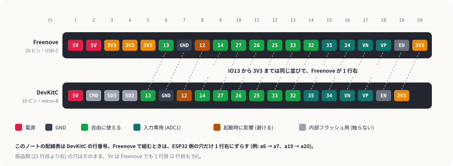

開発環境と最初の一歩
まだ何も配線せずに、PC と ESP32 を USB でつないで「書き込める・シリアルで話せる・ボタンが読める」ところまで確かめます。ここが通れば、あとの失敗は配線かスケッチのどちらかに絞れます。
1Arduino IDE と ESP32 ボードパッケージ
- Arduino IDE 2 を入れる。
- 「ファイル → 基本設定」の「追加のボードマネージャの URL」に次を入れる。
https://espressif.github.io/arduino-esp32/package_esp32_index.json - 「ツール → ボード → ボードマネージャ」で esp32 を検索し、esp32 by Espressif Systems の 3.x をインストールする。
- ESP32 を USB でつなぎ、「ツール → ボード」で ESP32 Dev Module、「ツール → ポート」で出てきたポートを選ぶ。
- USB ケーブルが充電専用だと、電源は入ってもポートは出ません。データ通信できるケーブルに替える。
- DevKitC の USB は micro-B で、USB シリアル変換に Silicon Labs の CP210x 系のチップを使っています。自動で認識されないときは Silicon Labs の CP210x ドライバを入れる。
- Freenove の ESP32 は USB Type-C で、変換チップは WCH の CH340 です。認識されないときは CH340 のドライバを入れる (Freenove の GitHub の CH340 フォルダにもある)。秋月で買ったケーブルは micro-B なので、Type-C のデータ用ケーブルが別に要る。
このノートのスケッチは PWM に ledcAttach(ピン, 周波数, 分解能) を使っています。これは 3.x で入った書き方で、2.x には無いのでコンパイルが通りません。
2最初のスケッチ: hello_esp32
配線は要りません。チップの情報を表示し、基板の BOOT ボタン (GPIO0) を押すたびに回数を出します。
- 書き込み (→ ボタン) を押す。
- 「ツール → シリアルモニタ」を開き、右下の速度を 115200 baud にする。
- 基板の EN ボタンを押すとリセットされ、最初から表示される。
確認すること
chip : ESP32-D0WD-V3 rev …のようにチップ名が出る (rev の数字はロットで違う)flash : 4096 KBと出る- BOOT を押すたびに
BOOT pressed: 1 回目と数が増える
Connecting....___のまま失敗する → BOOT を押したままもう一度書き込み、Writingが出たら離す。- シリアルモニタが文字化けする → 速度が 115200 になっているか見る。
3ブレッドボードへの挿し方
ESP32-DevKitC は幅が広く、EIC-801 のような 1 列 5 穴のブレッドボードに挿すと片側の列にだけ 1 穴ずつ空きが残り、反対側は空きが残りません。そこで、3V3・5V・GND と使いやすい GPIO が並ぶ J1 列を空きの残る側 (上) にして、USB を左に向けて 1〜19 行に挿します。

| 種類 | ピン | 気をつけること |
|---|---|---|
| 自由に使える | 13, 14, 25, 26, 27, 32, 33 | 入力にも出力 (PWM) にも使える。このノートの配線はここから選んでいる。 |
| 入力専用 | 34, 35, 36 (VP), 39 (VN) | 出力はできない。アナログ入力 (ADC1) なので、明るさや Echo の受け口にちょうどいい。 |
| 起動に影響 | 12 | 起動の瞬間に H だとフラッシュの電圧設定が変わって起動しないことがある。使わない。 |
| 触らない | CMD, SD2, SD3 | 内部のフラッシュメモリにつながっている。 |
| 電源 | 5V, 3V3, GND | 5V は USB からの電源がそのまま出る。3V3 は基板のレギュレータの出力。 |
アナログ入力には ADC1 と ADC2 があり、ADC2 側 (GPIO 25〜27 など) は Wi-Fi を使っている間は読めません。アナログ値を読むピンは ADC1 (32〜39) から選ぶと、あとで Wi-Fi を足しても困りません。
4Freenove の ESP32 ボード
Amazon で買った Freenove ESP32 WROOM ボード (2 枚入り) も、中身は同じ ESP32-WROOM-32E です。Arduino IDE の設定も DevKitC と同じ ESP32 Dev Module で書き込めます。違うのは USB が Type-C なことと、基板に青い LED (IO2) とフルカラー LED (IO16, WS2812) が載っていること、ピンが 20 本ずつあることです。
- フルカラー LED が 1 秒ごとに 赤 → 緑 → 青 → 白 と変わり、青い LED が 1 秒おきに点く
- BOOT を押すと色送りが止まり、もう一度押すと動く
- シリアルモニタに MAC アドレスが出る。2 枚とも試して、マスキングテープに末尾 2 桁を書いて貼っておくと見分けやすい
rgbLedWrite はボードパッケージ 3.1 以降に入っている関数です。コンパイルで「not declared」と出たら、ボードマネージャで esp32 を最新に更新してください。Freenove の説明書にある WS2812 用ライブラリは使いません。
ブレッドボードへの挿し方
ピン列の間隔は DevKitC と同じなので、挿し方も同じです (Freenove のピン配置図から測った値)。USB を左、3V3/5V の並ぶ列を上にして 1〜20 行に挿すと、上の a 列に 1 穴ずつ空きます。上の列の並びは、IO13 から 3V3 までが DevKitC と同じで、1 行右にずれます。

このノートの首振りガジェットと障害物回避カーの配線表は、DevKitC の行番号で書いています。Freenove で組むときは ESP32 側の穴だけ 1 行右にずらします (例: a6 → a7、a15 → a16、a19 → a20)。5V は Freenove でも 1 行目のままです。部品側 (21 行目より右) の穴は変わりません。ワイヤレス操縦のコントローラーは、はじめから Freenove の行番号で書いています。
5テスターで確かめる
テスター (DE-200A) は、動かないときに「どこまで電気が来ているか」を確かめる道具です。このノートでよく使うのは次の 3 つです。測り方の切り替えはテスターの説明書を見てください。
電流を測る端子 (A や mA と書いてある方) に挿したまま電圧を測ると、中のヒューズが切れます。このノートで電流は測らないので、赤は V・Ω の端子、黒は COM に挿したままにしておきます。
| 確かめること | レンジ | 測り方 | 正しければ |
|---|---|---|---|
| ジャンパー線が切れていないか | 導通ブザー | 電源を切った状態で、線の両端にリード棒を当てる | ピーッと鳴る。鳴らない線は捨てる (無選別のセットは特に) |
| 電池が減っていないか | 直流電圧 (V⎓) | 電池ボックスのスイッチを入れ、赤を赤い線、黒を黒い線に | 単3×4本で 6V 前後。車の走りが弱くなったら測って比べる |
| ESP32 の 3.3V が出ているか | 直流電圧 (V⎓) | USB をつないだまま、黒を GND の列、赤を 3V3 の列に | 3.3V 前後 |